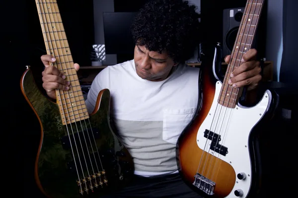
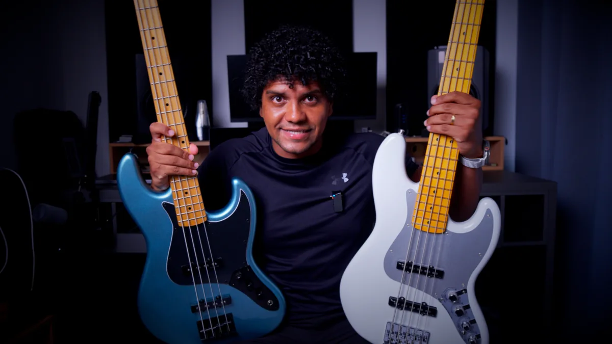
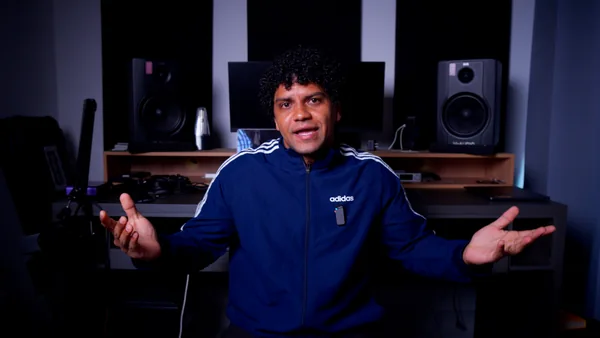
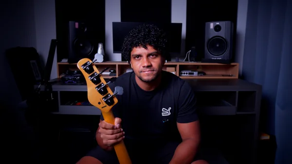
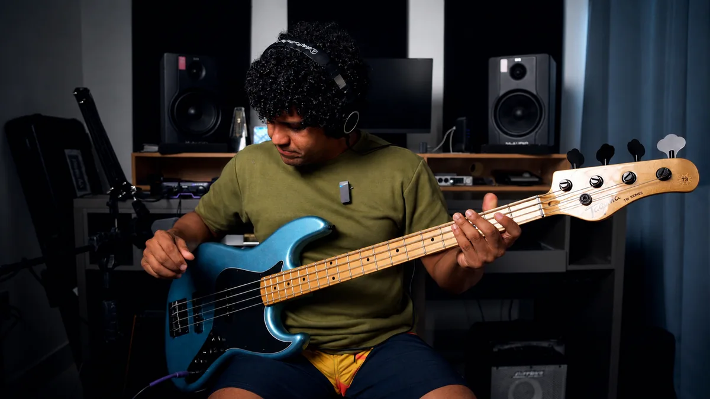
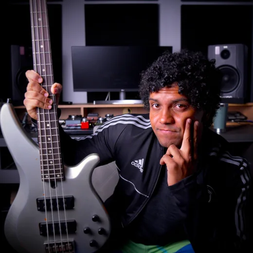

01 / BANCADAReviews e testes
Contrabaixos, pedais, amplificadores, captadores, pré-amplificadores e acessórios.
O LADO GRAVE DA MÚSICA
Reviews, upgrades, histórias, curiosidades e experiências sobre o universo do contrabaixo. Sem enrolação.

01 DIRETO DO CANAL
02 SELEÇÃO DO NATHAN
Cinco vídeos para conhecer o Caso Grave.
03 O QUE VOCÊ ENCONTRA NO CASO GRAVE

01 / BANCADAContrabaixos, pedais, amplificadores, captadores, pré-amplificadores e acessórios.

02 / DOCUMENTÁRIOSDocumentários sobre a história dos instrumentos, fabricantes, músicos e acontecimentos que marcaram a música.

03 / OFICINAExperimentos, modificações e testes para descobrir até onde um instrumento pode chegar.

04 SÉRIE DE UPGRADES
Até onde dá para levar um Tagima TW-73? A série acompanha a evolução do baixo: da escolha das peças à instalação, aos testes de som e ao comparativo com o Fender Ultra.
{{components}} Ver a série no YouTube {{icon:external}}
05 POR TRÁS DO CANAL
Aqui eu compartilho experiências, faço testes, conto histórias e coloco à prova ideias e equipamentos que fazem parte do universo dos baixistas.
Mais do que mostrar equipamentos caros ou baratos, a proposta é entender o que realmente faz diferença na música.
{{icon:instagram}} @caso.grave {{icon:external}}06 COMUNIDADE
07 PARCERIAS COMERCIAIS
Para fabricantes, distribuidores e empresas que querem apresentar seus equipamentos e projetos a quem vive a música.